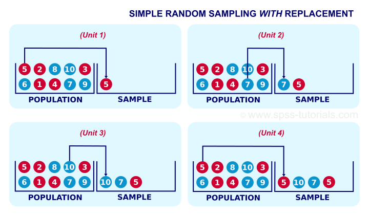
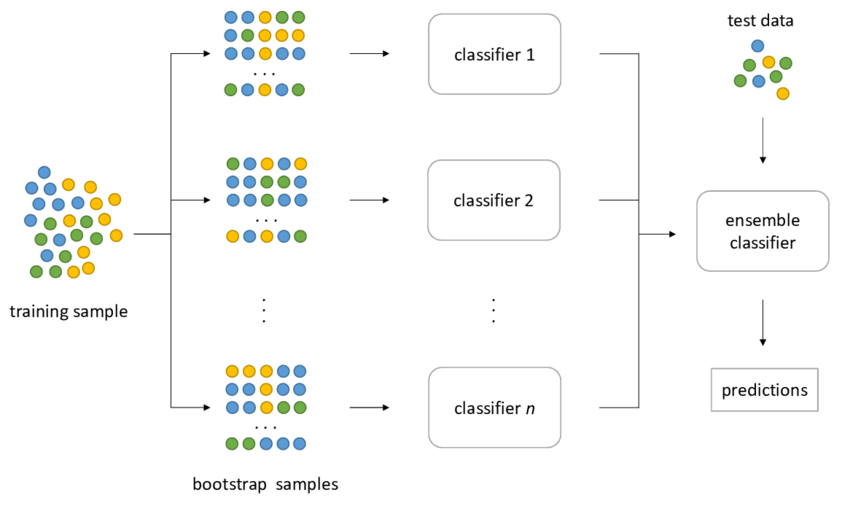
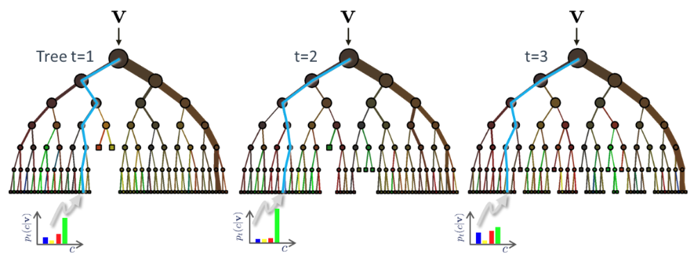
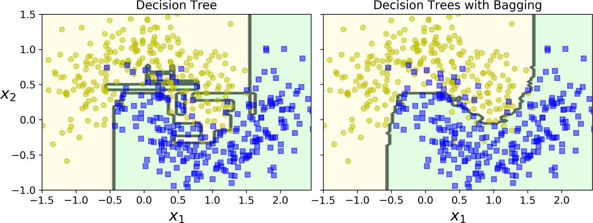

Random Forests
Contents
Random Forests#
As the name implies forests use many tree-based learners to improve on their generalization ability. Each of the trees is sometimes called a weak learner. When combined together they form the strong learner.
A key aspect of decision forests is the fact that its component trees are all randomly different from one another. This leads to de-correlation between the individual tree predictions and, in turn, to improved generalization. Forest randomness also helps achieve high robustness with respect to noisy data. Obviously all these weak learners will ultimately be fed with some permutation the same data so its not that we have a perfect de-correlation and this limits the performance of the aggregation.
Randomness is injected into the trees during the training phase. Two of the most popular ways of doing so are:
Random training data set sampling.
Randomized feature selection in split decisions.
These two techniques are not mutually exclusive and could be used together.
When sampling is performed with replacement, this is called bootstrap aggregating or bagging for short. Sampling with replacement shown below, simply samples from a population records the features of the sample and we replace the sample with one identical unit in the population.
 In sampling with replacement, in each draw, all examples have equally probability to be selected.
 Bagging principle - it applies to either classification (shown here) or regression.
Note something important. The chance of not being selected in any of the \(m\) draws from \(m\) samples with replacement is \((1−\frac{1}{m})^m\) or approximately 1/3 = 33.33% for large \(m\). Each predictor therefore may see several instances of the same sample while not see at all other instances (with probability 33.33%). This is because the probability of each predictor seeing one of the examples at least once in \(m\) samples is 1-P(not seeing this example) = 1 - 33.33% = 66.66%. Obviously, however the unseen population differs between predictors.
The Random Forest algorithm introduces extra randomness when growing trees; instead of searching for the very best feature when splitting a node, it searches for the best feature among a random subset of features. This results in a greater tree diversity. In addition, we can make trees even more random by also using random thresholds for each feature rather than searching for the best possible thresholds - also known as extremely randomized trees of Extra-Trees.
Feature Engineering#
One byproduct of the randomness of feature selections in the split decision across the weak tree learners is that we can get an estimate was to what features are important to a prediction and what aren’t. This is achieved by using the same principle of entropy but now across trees. For each node that used that feature in that tree we get an entropy reduction and we calculate the significance of each feature as the weighted average of all reductions across the forest. This can be used at the end of the training to select features that are important and attempt retrain suppressing the others and getting a model that is more compact and potentially faster to train and use for inference.
Inference#
 Example of three trees receiving the instance \(\mathbf x\) (shown as \(\mathbf v\) in the figure)
During testing the same unlabelled test input data \(\mathbf x\) is pushed through each component tree. At each internal node the test determined in training is applied and the process is repeated until a leaf is reached. At the leaf the stored posterior \(p_t(c|\mathbf x)\) is determined. The forest class posterior \(p(c|\mathbf x)\) is simply the average of all tree posteriors.
\(p(c|\mathbf x) = \frac{1}{T} \sum_{t=1}^T p_t(c|\mathbf x) \)
As can be seen below, ensemble methods such as random forest result into much smoother decision boundaries than those of decision trees.
 Random forest decision boundary in an example dataset